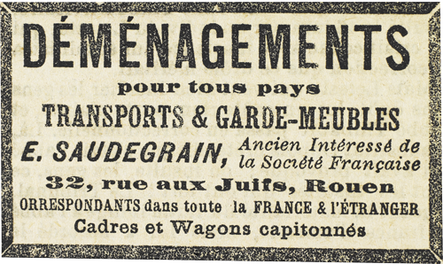

– Tu es moins bête que tu n’en as l’air, lui dit Raoul.
Léonard grogna :
– Un seul mot et je cogne.
Il se mit à manger et à boire, et Raoul risqua :
– Bon appétit ! S’il en reste, ne m’oublie pas.
Léonard se leva, les poings tendus.
– Suffit, vieux camarade, promit Raoul. J’ai un bœuf sur la langue. C’est moins nourrissant que ta charcuterie, mais je m’en contenterai.
Des heures passèrent. L’ombre vint.
Beaumagnan semblait dormir. Léonard fumait des pipes. Raoul monologuait et se gourmandait lui-même d’avoir été si imprudent avec Josine.
« J’aurais dû me méfier d’elle… Que de progrès à faire encore ! La Cagliostro est loin de me valoir, mais quelle décision ! Quelle vision claire de la réalité, et quelle absence de scrupules ! Une seule tare, qui empêche le monstre d’être complet : son système nerveux de dégénérée. Et c’est heureux pour moi aujourd’hui puisque cela me permettra d’arriver avant elle au Mesnil-sous-Jumièges. »
Car il ne mettait pas en doute la possibilité d’échapper à Léonard. Il avait remarqué que les liens de ses chevilles se relâchaient sous l’influence de certains mouvements, et, comptant bien libérer sa jambe droite, il imaginait avec satisfaction l’effet d’un bon coup de chaussure sur le menton de Léonard. Dès lors, c’était la course éperdue vers le trésor.
Les ténèbres s’accumulaient dans la salle. Léonard alluma une bougie, fuma une dernière pipe et but un dernier verre de vin. Après quoi, il fut pris d’une somnolence qui lui fit faire quelques saluts de droite et de gauche. Par précaution, il tenait la bougie dans sa main, de sorte que la brûlure de la cire qui coulait le réveillait de temps à autre. Un coup d’œil à ses prisonniers, un autre à la double corde utilisée comme sonnette d’alarme, et il se rendormait.
Raoul continuait insensiblement, et non sans résultat, son petit travail de délivrance. Il devait être environ neuf heures du soir.
« Si je puis partir à onze heures, se disait-il, vers minuit je passe à Lillebonne où je soupe ; vers trois heures du matin je débouche au lieu sacré, et, dès les premières lueurs de l’aube, je mets dans ma poche le coffre-fort des moines. Oui, dans ma poche ! pas besoin des frères Corbut ni de personne. »
Mais, à dix heures et demie, il en était au même point. Si lâches que fussent les nœuds, ils ne cédaient pas et Raoul commençait à désespérer, lorsque soudain il lui sembla entendre un bruit léger qui différait de tous ces frémissements dont se compose le grand silence nocturne, feuilles qui voltigent, oiseaux qui remuent sur les branches, caprices du vent.
Cela se renouvela deux fois, et il eut la certitude que cela entrait par la fenêtre latérale qu’il avait ouverte, et que Léonard avait repoussée avec négligence.
De fait, l’un des battants parut glisser en avant.
Raoul observa Beaumagnan. Il avait entendu et regardait aussi.
En face d’eux, Léonard s’éveilla, les doigts brûlés, reprit son petit manège de surveillance, et s’assoupit de nouveau. Là-bas le bruit, un instant suspendu, recommença, ce qui prouvait bien que chacun des mouvements du geôlier était attentivement suivi.
Quel événement se préparait donc ? La barrière étant close, il fallait qu’on eût franchi le mur que hérissaient des tessons de bouteilles, escalade qui n’était possible que pour un familier des lieux et par quelque brèche dégarnie de tessons. Qui ? Un paysan ? Un braconnier ? Était-ce du secours ? Un ami de Beaumagnan ? Ou quelque rôdeur ?
Une tête surgit, indistincte dans les ténèbres. Le rebord de la fenêtre, peu élevé, fut franchi aisément.
Tout de suite, Raoul discerna une silhouette de femme, et, aussitôt, avant même de voir, il sut que cette femme n’était autre que Clarisse.
Quelle émotion l’envahit ! Joséphine Balsamo s’était donc trompée, en supposant que Clarisse ne pourrait réagir ! Inquiète, retenue par la crainte des dangers qui le menaçaient surmontant sa lassitude et sa peur, la jeune fille avait dû se poster aux environs du vieux phare et attendre la nuit.
Et maintenant, elle tentait l’impossible pour sauver celui qui l’avait trahie si cruellement.
Elle fit trois pas. Nouveau réveil de Léonard qui, heureusement, lui tournait le dos. Elle s’arrêta, puis reprit sa marche dès qu’il se rendormit. Ainsi parvint-elle à son côté.
Le poignard de Joséphine Balsamo se trouvait sur la chaise. Elle l’y prit. Allait-elle frapper ?
Raoul s’effraya. Le visage de la jeune fille, mieux éclairé, lui semblait contracté par une volonté farouche. Mais, leurs regards s’étant rencontrés, elle subit les ordres silencieux qu’il lui imposait, et elle ne frappa point. Raoul se pencha un peu pour que la corde qui le reliait à la chaise se détendît. Beaumagnan l’imita.
Alors, lentement, sans trembler, soulevant la corde avec une main, elle y entra le fil de la lame.
La chance voulut que l’ennemi ne se réveillât pas. Clarisse l’eût tué infailliblement. Sans le quitter des yeux, obstinée dans sa menace de mort, elle se baissa jusqu’à Raoul, et, à tâtons, chercha ses liens. Les poignets furent délivrés.
Il souffla :
– Donne-moi le couteau.
Elle obéit. Mais une main fut plus rapide que celle de Raoul. Beaumagnan qui, lui aussi de son côté, patiemment, depuis des heures, avait attaqué ses cordes, saisit l’arme au passage.
Furieux, Raoul lui empoigna le bras. Si Beaumagnan achevait de se délier avant lui et prenait la fuite, Raoul perdait tout espoir de conquérir le trésor. La lutte fut acharnée, lutte immobile, où chacun employait toute sa force en se disant qu’au moindre bruit Léonard se réveillerait.
Clarisse, qui tremblait de peur, se mit à genoux, autant pour les supplier tous deux, que pour ne pas tomber à terre.
Mais la blessure de Beaumagnan, si légère qu’elle fût, ne lui permit pas de résister aussi longtemps. Il lâcha prise.
À ce moment, Léonard remua la tête, ouvrit un œil, et regarda le tableau qui s’offrait à lui, les deux hommes à moitié dressés, rapprochés l’un de l’autre et en posture de combat, et Clarisse d’Étigues à genoux.
Cela dura quelques secondes, quelques secondes effroyables, car il n’y avait point de doute que Léonard, voyant cette scène, n’abattît ses ennemis à coups de revolver. Mais il ne la vit pas. Son regard, fixé sur eux, ne parvint pas à les voir. La paupière se referma sans que la conscience pût s’éveiller.
Alors Raoul coupa ses derniers liens. Debout, le poignard à la main, il était libre. Il chuchota, pendant que Clarisse se relevait :
– Va… Sauve-toi…
– Non, fit-elle, d’un signe de tête.
Et elle lui montra Beaumagnan, comme si elle n’eût pas consenti à laisser derrière elle, exposé à la vengeance de Léonard, cet autre captif.
Raoul insista. Elle fut inébranlable.
De guerre lasse, il tendit le couteau à son adversaire.
– Elle a raison, souffla-t-il… Soyons beau joueur. Tiens, débrouille-toi… Et désormais, chacun son jeu, hein ?
Il suivit Clarisse. L’un après l’autre, ils enjambèrent la fenêtre. Une fois dans le clos, elle lui prit la main et le conduisit jusqu’au mur, à un endroit où le faîte étant démoli, il y avait une brèche.
Aidée par lui, Clarisse passa.
Mais, quand il eut franchi le mur, il ne vit plus personne.
– Clarisse, appela-t-il, où êtes-vous donc ?
Une nuit sans étoiles pesait sur les bois. Ayant écouté, il entendit une course légère parmi les fourrés voisins. Il y pénétra, heurta des branches et des ronces qui lui barrèrent la route, et dut revenir au sentier.
« Elle me fuit, pensa-t-il. Prisonnier, elle risque tout pour me délivrer. Libre, elle ne consent plus à me voir. Ma trahison, la monstrueuse Joséphine Balsamo, l’abominable aventure, tout cela lui fait horreur. »
Mais, comme il regagnait son point de départ, quelqu’un dégringola du mur qu’il avait franchi. C’était Beaumagnan qui s’enfuyait à son tour. Et tout de suite des coups de feu jaillirent qui venaient de la même direction. Raoul n’eut que le temps de se mettre à l’abri. Léonard, perché sur la brèche, tirait dans les ténèbres.
Ainsi, à onze heures du soir environ, les trois adversaires s’élançaient en même temps vers la pierre de la Reine, située à onze lieues de distance.
Quels étaient leurs moyens individuels d’y parvenir ? Tout dépendait de cela.